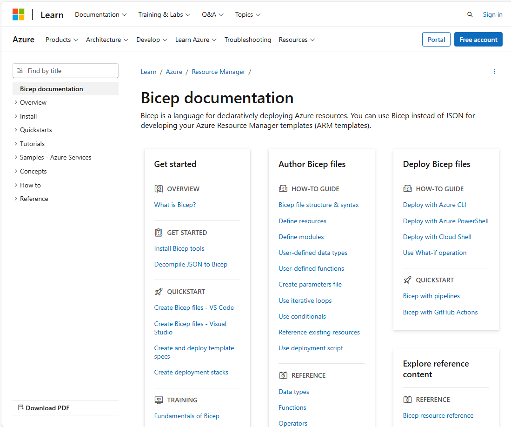

Infrastructure as Code
David Watson
Welcome to the Infrastructure as Code session. This builds on the Azure DevOps
and Automation session you've already completed. We'll spend about 90 minutes on
Bicep fundamentals, then 30 minutes on deploying Bicep templates using the
ADO pipelines concepts you've already learned.
Agenda
Introduction to Bicep
What is Bicep?
Getting Started
Template Fundamentals
Deploying Bicep
Advanced Template Topics
Deploying with ADO Pipelines
Why Pipeline-based IaC?
Service Connections
Deployment Tasks
Multi-Environment Pipelines
Best Practices
Two parts today. The bulk of the session covers Bicep — Microsoft's domain-specific
language for deploying Azure resources. Then we'll tie it all together with ADO
pipelines, building on what you learned in the previous session.
What is Bicep?
A domain-specific language (DSL) for deploying Azure resources
Transparent abstraction over ARM templates (JSON)Compiles to ARM JSON — anything ARM can do, Bicep can do
First-class support from Microsoft — ships with Azure CLI
Declarative syntax — you describe what , Azure handles how
Bicep is not a separate service — it's a language that compiles down to ARM template JSON.
Think of it like TypeScript to JavaScript. The compiled output is a standard ARM template,
so there's no risk of lock-in and anything you can do in ARM, you can do in Bicep.
Microsoft is actively investing in Bicep as the recommended IaC approach for Azure.
Infrastructure as Code means you define your cloud resources in text files that can be
version-controlled, reviewed, tested, and deployed consistently. Instead of clicking through
the Azure portal, you write a declarative template that describes the desired end state.
Azure Resource Manager (ARM) then figures out the order of operations, handles parallelism,
and ensures idempotency — deploying the same template twice produces the same result.
Why not just use ARM JSON directly? You can, but ARM templates are extremely verbose.
A simple storage account is 30+ lines of JSON with a schema declaration, content version,
parameter blocks, and lots of bracket-syntax expressions. Bicep strips all that away while
compiling to the exact same ARM JSON under the hood. There's zero runtime difference —
Azure never sees Bicep, only the compiled JSON.
Bicep vs ARM Templates
Bicep compiles to ARM JSON — same resource, dramatically less code
ARM (JSON)
{
"type": "Microsoft.Storage/
storageAccounts",
"apiVersion": "2023-01-01",
"name": "[parameters('name')]",
"location": "[resourceGroup()
.location]",
"sku": {
"name": "[parameters('sku')]"
},
"kind": "StorageV2"
}
Bicep
resource sa 'Microsoft.Storage/
storageAccounts@2023-01-01' = {
name: storageAccountName
location: resourceGroup().location
sku: {
name: skuName
}
kind: 'StorageV2'
}
Here's the same resource in both formats. Bicep is dramatically cleaner —
no square-bracket expression syntax, no wrapping everything in parameters() calls,
and the resource type and API version are together on one line. Bicep also
gives you IntelliSense, type checking, and compile-time validation.
Look at the ARM side: every dynamic value needs the square-bracket expression syntax
like [parameters('name')], [resourceGroup().location]. These are evaluated at deployment
time by ARM but they make the template hard to read and error-prone — miss a bracket and
you get a cryptic deployment error at runtime.
On the Bicep side, you just write the variable name directly. The compiler converts it
to the bracket syntax for you. The resource type and API version sit on the declaration
line, so the body only contains the actual properties. In VS Code, typing a dot after
the resource type gives you auto-complete for every available property at that API version.
You can always inspect the compiled output with 'az bicep build' to see the ARM JSON
that Bicep produces — it's a great learning tool when you're getting started.
Why Bicep over ARM?
Simpler Syntax No JSON noise — cleaner, more readable templates
Type Safety Compile-time validation catches errors before deployment
Modules First-class support for reusable, composable templates
Tooling VS Code extension with IntelliSense, snippets, and linting
The key advantages are readability, type safety, modularity, and tooling.
Bicep files are roughly half the size of equivalent ARM JSON. The compiler
catches type mismatches and missing required properties before you deploy.
Modules let you break templates into reusable pieces. And the VS Code extension
provides a best-in-class authoring experience.
Simpler Syntax: No schema declarations, no contentVersion, no bracket expressions.
What was 200 lines of JSON becomes ~80 lines of Bicep. This isn't just cosmetic —
fewer lines means fewer bugs and faster code reviews.
Type Safety: If you try to assign a string to an integer property, Bicep tells you
immediately with a red squiggly in VS Code. In ARM JSON, you'd only find out when
the deployment fails — potentially 10 minutes into a deployment.
Modules: ARM had linked templates, but they required publicly accessible URLs or
storage account SAS tokens. Bicep modules just reference local file paths. No URL
management, no SAS tokens, and the compiler bundles everything into a single deployment.
Tooling: The VS Code Bicep extension gives you auto-complete for every resource type,
property validation, go-to-definition, rename support, and a live visualiser that
shows your resource graph.
Tools & Setup
VS Code + Bicep extension — IntelliSense, validation, snippetsAzure CLI (v2.20+) — Bicep is built-in, no separate installAzure PowerShell (Az module 5.6+) — also supports Bicep nativelyBicep CLI — az bicep install / az bicep upgrade
# Verify Bicep is installed
az bicep version
# Upgrade to latest
az bicep upgrade
# Build (compile to ARM JSON) — useful for inspection
az bicep build --file main.bicep
The tooling story is excellent. If you have Azure CLI installed, Bicep is already
there. The VS Code extension is essential — it gives you dot-completion for resource
properties, real-time error highlighting, and snippets. The build command compiles
to ARM JSON which is useful for debugging or understanding what Bicep produces.
Setup is simple: install Azure CLI (which you probably already have from the DevOps
session), then install the VS Code Bicep extension from the marketplace. That's it.
Bicep is bundled with the CLI, so 'az deployment group create' automatically compiles
.bicep files before submitting to ARM — no separate build step needed.
The 'az bicep version' command tells you which version is installed. If you need the
latest features, 'az bicep upgrade' pulls the newest release. The Bicep CLI can also
decompile existing ARM JSON into Bicep with 'az bicep decompile' — this is invaluable
when you have existing ARM templates you want to migrate.
For teams, you can also configure a bicepconfig.json file in your repo root to set
linting rules, module aliases, and other project-wide settings. This ensures everyone
on the team follows the same conventions.
Your First Bicep File
A Bicep file has three sections: parameters (inputs), resources (what to deploy), and outputs (return values)
// Parameters
param location string = resourceGroup().location
param storageAccountName string
// Resource
resource storageAccount 'Microsoft.Storage/storageAccounts@2023-01-01' = {
name: storageAccountName
location: location
sku: {
name: 'Standard_LRS'
}
kind: 'StorageV2'
}
// Output
output storageId string = storageAccount.id
Here's a complete Bicep file. It declares parameters at the top, then a resource,
and finally an output. Notice there's no boilerplate schema declarations like in ARM.
The resource type and API version are on the declaration line. Properties get
IntelliSense in VS Code. The output exposes the resource ID for use by other templates.
The structure is: parameters at the top define inputs, then resource declarations in
the middle, and outputs at the bottom. This is a convention, not a requirement — Bicep
doesn't enforce ordering — but it's the standard pattern you'll see in the community.
The 'param location string = resourceGroup().location' line shows a parameter with a
default value. If the caller doesn't provide a location, it uses the resource group's
location. This is a very common pattern — you almost always want resources in the same
region as their resource group.
The 'param storageAccountName string' has no default, so it's required. If you try to
deploy without providing it, the deployment will fail immediately with a clear error.
The output at the bottom returns the resource ID of the storage account. This is how
you chain deployments — one template's output becomes another template's input parameter.
We'll see this in action when we cover modules.
Parameters
Inputs to your template
// Basic parameter with type
param environment string
// With default value
param location string = resourceGroup().location
// With allowed values
@allowed(['dev', 'staging', 'prod'])
param environmentName string
// With constraints
@minLength(3)
@maxLength(24)
@description('Globally unique storage account name')
param storageAccountName string
Parameters make your templates reusable. You can set types, defaults, and constraints
using decorators. The @allowed decorator restricts values to a fixed set.
@minLength and @maxLength enforce string length. @description adds metadata
that shows up in the portal when deploying. Parameters without defaults are required.
Decorators are Bicep's way of adding metadata and validation to parameters. They use
the @ syntax and go directly above the parameter declaration. You can stack multiple
decorators on a single parameter — for example @minLength, @maxLength, and @description
all on the same storage account name parameter.
The @allowed decorator is like an enum — the deployment will fail if someone passes a
value not in the list. This is great for environment names (dev/staging/prod) or
SKU tiers where you want to restrict choices.
The @description decorator is often overlooked but very valuable — it shows up as
tooltip text in VS Code when someone consumes your template as a module, and it
appears in the Azure portal if someone deploys the template from the portal UI.
A common pattern is to have a small number of required parameters (like environment
and app name) and sensible defaults for everything else. This keeps the deployment
command simple while still allowing full customisation when needed.
Parameter Types
Bicep supports primitive types, complex types, and secure types for secrets
// Primitive types
param name string
param count int
param isEnabled bool
// Complex types
param tags object = {
environment: 'dev'
team: 'platform'
}
param allowedIps array = [
'10.0.0.0/24'
'172.16.0.0/16'
]
// Secure types — never logged or stored in plain text
@secure()
param adminPassword string
Bicep supports string, int, bool, object, and array types. The @secure decorator
is critical for passwords and secrets — the value is never exposed in deployment logs
or the Azure portal. In practice you'll usually pull secrets from Key Vault rather
than passing them as parameters directly.
Object and array types are useful when you need to pass structured data. For example,
a tags object lets you apply consistent tagging across all resources in the template.
An array of IP addresses can define firewall rules dynamically.
The @secure() decorator is essential for any sensitive value. Without it, parameter
values are logged in the deployment history visible in the Azure portal. With @secure(),
the value is masked in all logs, deployment history, and debug output. However, the
best practice is to avoid passing secrets as parameters at all — instead, use a Key
Vault reference in your parameter file so the secret is fetched at deployment time
and never leaves Azure.
Object parameters are loosely typed by default — they accept any shape. If you want
strict typing, use user-defined types (which we'll cover shortly) to enforce a specific
structure at compile time.
Variables
Unlike parameters (caller-provided inputs), variables are computed inside the template and used to simplify repeated expressions
param environment string
param appName string
param location string = resourceGroup().location
// Simple variable
var resourcePrefix = '${appName}-${environment}'
// Computed variable
var storageName = toLower(replace('${resourcePrefix}sa', '-', ''))
// Complex variable
var commonTags = {
environment: environment
application: appName
managedBy: 'Bicep'
}
Variables simplify templates by computing values once and reusing them.
String interpolation uses the dollar-brace syntax. You can call built-in functions
like toLower and replace. Variables are resolved at deployment time, not compile time.
Use them for naming conventions, computed tags, or any repeated expression.
The key difference between parameters and variables: parameters are inputs provided
by the caller, while variables are computed inside the template. Use variables to
derive values from parameters — like building a resource name prefix from the app name
and environment, or computing a storage account name that meets Azure's naming rules
(lowercase, no hyphens, 3-24 characters).
The commonTags variable is a pattern you'll use in every real-world template. Define
your standard tags once as a variable, then spread them onto every resource. This
ensures consistent tagging for cost management, ownership tracking, and compliance.
Notice the string interpolation syntax: '${appName}-${environment}'. This is much
cleaner than ARM's concat() function. You can nest function calls inside interpolation
too — for example '${toLower(appName)}-${environment}'.
Resources
Each resource has a symbolic name (for Bicep references), a type with API version, and its properties
// Symbolic name Resource type + API version
resource appPlan 'Microsoft.Web/serverfarms@2023-01-01' = {
name: '${resourcePrefix}-plan'
location: location
sku: {
name: 'B1'
tier: 'Basic'
}
kind: 'linux'
properties: {
reserved: true // Required for Linux
}
}
Resources are declared with a symbolic name (used to reference them in Bicep),
a resource type with API version, and the resource properties. The symbolic name
is local to the Bicep file — it's not the Azure resource name. Bicep automatically
figures out dependencies when you reference one resource from another.
The symbolic name (appPlan in this example) is how you refer to this resource
elsewhere in the Bicep file. It never appears in Azure — it's purely a Bicep concept.
The actual Azure resource name is set by the 'name' property.
The resource type string 'Microsoft.Web/serverfarms@2023-01-01' identifies both the
resource provider (Microsoft.Web), the resource type (serverfarms), and the API version
(2023-01-01). The API version determines which properties are available. The VS Code
extension shows you all valid API versions and properties for every resource type.
Every resource needs at minimum a name and location. The properties block contains
resource-specific configuration. In VS Code, press Ctrl+Space inside the properties
block to see every available property with descriptions and types.
Note the 'kind' and 'properties.reserved' settings here — these are required for
Linux App Service plans and are a good example of platform-specific configuration
that the Bicep extension helps you discover.
Resource Dependencies
Reference one resource from another and Bicep automatically handles deployment order — no manual dependsOn needed
resource appPlan 'Microsoft.Web/serverfarms@2023-01-01' = {
name: '${resourcePrefix}-plan'
location: location
sku: { name: 'B1' }
}
// Referencing appPlan.id creates an implicit dependency
resource webApp 'Microsoft.Web/sites@2023-01-01' = {
name: '${resourcePrefix}-app'
location: location
properties: {
serverFarmId: appPlan.id // ← implicit dependency
}
}
One of Bicep's best features. When you reference one resource's properties from
another, Bicep automatically creates a dependsOn in the compiled ARM template.
No need to manage dependencies manually — just reference the symbolic name.
This is much less error-prone than ARM's explicit dependsOn arrays.
In ARM templates, you had to manually write dependsOn arrays listing every resource
that needed to be created first. Miss one and you get intermittent deployment failures
— the worst kind of bug because it works sometimes and fails other times depending on
deployment timing.
In Bicep, the line 'serverFarmId: appPlan.id' does two things: it sets the property
value AND tells Bicep that webApp depends on appPlan. The compiler generates the
correct dependsOn automatically in the ARM JSON output.
This means you should almost never write an explicit dependsOn in Bicep. If you find
yourself adding one, reconsider — there's usually a way to create the dependency
implicitly through a property reference. The one exception is when you have a
dependency that isn't expressed through properties, like a role assignment that
must exist before a resource can function.
Outputs
Outputs expose values from a deployment — essential for chaining modules and for use in pipeline scripts
// Output a resource property
output appUrl string = 'https://${webApp.properties.defaultHostName}'
// Output a resource ID
output appServiceId string = webApp.id
// Output a complex object
output connectionInfo object = {
serverName: sqlServer.properties.fullyQualifiedDomainName
databaseName: sqlDatabase.name
}
Outputs let you pass values back from a deployment. They're essential when
chaining templates — a module can output resource IDs or connection strings
that the parent template needs. Outputs are also available in the Azure CLI
after a deployment completes, which is useful in scripts and pipelines.
Common things to output: resource IDs (for cross-referencing), hostnames and URLs
(for application configuration), connection strings (for downstream services), and
principal IDs (for role assignments in other templates).
In a pipeline, you can capture outputs using the Azure CLI:
'az deployment group show -g myRg -n myDeployment --query properties.outputs'
This lets you pass infrastructure values to subsequent pipeline steps — for example,
deploying an app to the App Service that the Bicep template just created.
Important security note: never output secrets. Outputs are stored in plain text in
the deployment history. If you need to pass a secret between templates, use Key Vault
references or the @secure() decorator on module parameters instead.
Complex object outputs are useful when a module creates several related resources —
you can return all the connection details in a single structured output rather than
having many individual string outputs.
String Interpolation & Functions
Bicep provides ${} interpolation, 60+ built-in functions, and a ternary operator for inline conditionals
// String interpolation
var greeting = 'Hello, ${name}!'
var resourceName = '${prefix}-${environment}-${suffix}'
// Built-in functions
var lowerName = toLower(storageAccountName)
var uniqueName = '${prefix}${uniqueString(resourceGroup().id)}'
var subnetId = resourceId('Microsoft.Network/virtualNetworks/subnets',
vnetName, subnetName)
// Ternary operator
var skuName = isProd ? 'Standard_GRS' : 'Standard_LRS'
var tier = contains(premiumRegions, location) ? 'Premium' : 'Standard'
Bicep supports string interpolation with dollar-brace syntax. Built-in functions
include toLower, toUpper, uniqueString, resourceId, subscription, resourceGroup,
and many more. The ternary operator replaces the ARM if() function and is much
more readable. uniqueString is commonly used to generate globally unique names
from a seed value like the resource group ID.
uniqueString() is one of the most important functions. Many Azure resources require
globally unique names (storage accounts, web apps, etc.). uniqueString() generates a
deterministic 13-character hash from its inputs — same inputs always produce the same
output. Using resourceGroup().id as the seed means the name is unique per resource
group but consistent across deployments to the same group.
The ternary operator (condition ? trueValue : falseValue) is a huge readability win
over ARM's if() function. Use it for environment-based SKU selection, feature flags,
or any conditional value. You can nest them, but don't go overboard — if the logic
gets complex, use a variable to keep things readable.
resourceId() is used when you need to construct the full Azure resource ID for a
resource that you're referencing by name rather than by symbolic name. This is common
when referencing resources in other resource groups or subscriptions.
Conditional Deployments
Use if to deploy resources only when a condition is true — ideal for environment-specific resources
param deployDiagnostics bool = true
param environment string
// Deploy resource conditionally
resource diagStorage 'Microsoft.Storage/storageAccounts@2023-01-01' =
if (deployDiagnostics) {
name: '${resourcePrefix}diag'
location: location
sku: { name: 'Standard_LRS' }
kind: 'StorageV2'
}
// Conditional based on parameter value
resource appInsights 'Microsoft.Insights/components@2020-02-02' =
if (environment == 'prod') {
name: '${resourcePrefix}-ai'
location: location
kind: 'web'
properties: { Application_Type: 'web' }
}
The if keyword lets you conditionally deploy resources. This is great for
environment-specific resources — maybe you only want Application Insights in
production, or only deploy diagnostics storage when a flag is set. The condition
is evaluated at deployment time.
Practical examples of conditional deployment: deploy a WAF (Web Application Firewall)
only in production, enable diagnostic logging only when a flag is set, create a
staging slot only for production App Services, or deploy a premium SKU in prod but
basic in dev.
Important: when a resource is conditionally deployed, any outputs that reference it
also need to handle the case where it doesn't exist. You can use the ternary operator:
output diagId string = deployDiagnostics ? diagStorage.id : ''
The condition is a boolean expression, so you can combine multiple checks:
if (environment == 'prod' && deployDiagnostics)
This gives you fine-grained control over what gets deployed where.
This is much cleaner than the ARM approach where you had to use a condition property
with an expression that was hard to read and easy to get wrong.
Loops
Deploy multiple instances with for
// Loop over an array
param locations array = ['australiaeast', 'southeastasia']
resource storageAccounts 'Microsoft.Storage/storageAccounts@2023-01-01' = [
for loc in locations: {
name: '${resourcePrefix}${uniqueString(loc)}'
location: loc
sku: { name: 'Standard_LRS' }
kind: 'StorageV2'
}
]
// Loop with index
resource subnets 'Microsoft.Network/virtualNetworks/subnets@2023-05-01' = [
for (name, i) in subnetNames: {
name: name
properties: {
addressPrefix: '10.0.${i}.0/24'
}
}
]
Loops let you deploy multiple instances of a resource from an array. The for-in
syntax iterates over the array, and you can destructure to get both the item
and its index. This replaces the copy element in ARM templates and is far more
readable. You can also loop over ranges using the range() function.
Real-world use cases: deploying resources across multiple regions for geo-redundancy,
creating multiple subnets in a virtual network, provisioning a set of databases,
or creating multiple storage accounts for different purposes.
The index form 'for (name, i) in array' is useful when you need both the value and
its position — for example, computing unique address prefixes for each subnet using
the index to vary the third octet of the IP range.
You can also loop over objects using the items() function:
for item in items(myObject) — this gives you key/value pairs.
Loops work on variables and outputs too, not just resources. You can generate an
array of resource IDs with: output ids array = [for i in range(0, count): resource[i].id]
One thing to watch out for: ARM deploys looped resources in parallel by default.
If you need serial deployment (e.g., for resources that can't be created simultaneously),
add @batchSize(1) above the resource declaration to deploy them one at a time.
Modules
A module is just a Bicep file called from another — pass in parameters, get back outputs, like a function
Module file
// modules/storage.bicep
param name string
param location string
param sku string = 'Standard_LRS'
resource sa 'Microsoft.Storage/
storageAccounts@2023-01-01' = {
name: name
location: location
sku: { name: sku }
kind: 'StorageV2'
}
output id string = sa.id
output endpoint string =
sa.properties
.primaryEndpoints.blob
Consuming module
// main.bicep
param environment string
param location string =
resourceGroup().location
module storage 'modules/storage.bicep'
= {
name: 'storageDeployment'
params: {
name: '${environment}store01'
location: location
sku: 'Standard_GRS'
}
}
// Use module output
output blobEndpoint string =
storage.outputs.endpoint
Modules are just Bicep files that you call from other Bicep files. The module
file defines parameters and outputs like any template. The consuming template
references it by path and passes in parameter values. Module outputs are accessed
via the module symbolic name. This lets you build a library of reusable components.
Think of modules like functions in a programming language. The module file defines
parameters (inputs) and outputs (return values). The calling template invokes the
module, passes in arguments, and can use the returned values.
A typical project structure looks like:
infra/
main.bicep — orchestrator, calls modules
modules/
storage.bicep — storage account module
networking.bicep — VNet/subnet module
webapp.bicep — App Service module
parameters/
dev.bicepparam
prod.bicepparam
The 'name' property on the module is the deployment name in Azure, not a Bicep
symbolic name. It shows up in the Azure portal under the resource group's Deployments
blade. Use descriptive names like 'storageDeployment' so you can identify which
module created which resources.
Each module becomes a nested deployment in ARM — this means modules have their own
scope and can't directly access resources in the parent template. All communication
happens through parameters and outputs.
Module Scoping
Modules can target different resource groups or subscriptions using the scope property
// Deploy to a different resource group
module networkModule 'modules/network.bicep' = {
name: 'networkDeploy'
scope: resourceGroup('networking-rg')
params: {
vnetName: 'main-vnet'
location: location
}
}
// Deploy to a subscription scope (e.g., create resource groups)
targetScope = 'subscription'
resource rg 'Microsoft.Resources/resourceGroups@2023-07-01' = {
name: 'myapp-${environment}-rg'
location: location
}
module appModule 'modules/app.bicep' = {
name: 'appDeploy'
scope: rg // Deploy into the resource group we just created
params: { ... }
}
Modules can target different scopes. You can deploy a module into a different
resource group, or set targetScope to subscription to create resource groups
themselves. This is powerful for hub-and-spoke patterns where networking is in
one resource group and application resources are in another. You can even deploy
across subscriptions using the subscription() scope function.
The four scopes from narrowest to broadest: resource group, subscription, management
group, and tenant. Most day-to-day work happens at resource group scope. Subscription
scope is common for platform teams who provision resource groups, policy assignments,
and RBAC roles.
A powerful pattern: a subscription-scoped main.bicep that first creates resource groups,
then calls resource-group-scoped modules to deploy into them. This lets you provision
an entire environment from scratch — resource groups and all — in a single deployment.
The scope property on a module can target resource groups in different subscriptions:
scope: resourceGroup('other-subscription-id', 'other-rg')
This is useful for shared services architectures where DNS zones, Key Vaults, or
monitoring resources live in a central subscription.
The service principal running the deployment needs permissions at whatever scope
you're targeting. For subscription-scoped deployments, it typically needs Contributor
at the subscription level.
Deploying with Azure CLI
The CLI compiles Bicep to ARM JSON automatically — pass parameters inline or via a file
# Deploy to a resource group
az deployment group create \
--resource-group myapp-rg \
--template-file main.bicep \
--parameters environment='dev' location='australiaeast'
# Deploy with a parameter file
az deployment group create \
--resource-group myapp-rg \
--template-file main.bicep \
--parameters @parameters.dev.json
# Subscription-scope deployment
az deployment sub create \
--location australiaeast \
--template-file main.bicep \
--parameters @parameters.json
The Azure CLI automatically compiles Bicep to ARM JSON before submitting the deployment.
You can pass parameters inline or via a parameter file. For subscription-scope
deployments, use 'deployment sub create' instead of 'deployment group create'.
Parameter files use the same JSON format as ARM parameter files.
The deployment command is idempotent — you can run it multiple times and it will
converge to the desired state. If a resource already exists with the same configuration,
ARM will skip it. If a property has changed, it will update it. This is the core
principle of declarative IaC.
Inline parameters (--parameters key=value) are convenient for quick testing. Parameter
files (@parameters.dev.json) are better for CI/CD because they're version-controlled
and reviewable. You can even combine both — the parameter file provides defaults and
inline parameters override specific values.
You can also use PowerShell: New-AzResourceGroupDeployment -ResourceGroupName myapp-rg
-TemplateFile main.bicep. Both CLI and PowerShell support Bicep natively.
The deployment creates a resource in Azure's deployment history. You can view past
deployments, their parameters, outputs, and any errors in the Azure portal under
the resource group's Deployments blade. This provides an audit trail of every
infrastructure change.
Parameter Files
Keep one parameter file per environment — same template, different configuration values
Bicep parameter file (.bicepparam)
using './main.bicep'
param environment = 'dev'
param location = 'australiaeast'
param storageAccountName = 'mydevstore01'
param tags = {
environment: 'dev'
costCenter: 'IT'
}
JSON parameter file
{
"$schema": "https://schema.management
.azure.com/schemas/2019-04-01
/deploymentParameters.json#",
"contentVersion": "1.0.0.0",
"parameters": {
"environment": {
"value": "dev"
},
"location": {
"value": "australiaeast"
}
}
}
Bicep now has its own parameter file format (.bicepparam) which is much cleaner
than the JSON format. It uses the 'using' keyword to reference the template,
so you get IntelliSense and type checking for parameter values. The JSON format
still works and is required if you're using older tools. Use per-environment
parameter files — parameters.dev.json, parameters.prod.json, etc.
The .bicepparam format is a significant improvement. The 'using' statement links the
parameter file to a specific template, which means VS Code knows exactly which
parameters are expected, their types, and their constraints. You get auto-complete,
validation, and error highlighting as you type parameter values.
The JSON format wraps every value in a { "value": ... } object which is verbose and
error-prone. The .bicepparam format is just 'param name = value' — much cleaner.
Best practice for a real project: have one parameter file per environment:
parameters/dev.bicepparam
parameters/staging.bicepparam
parameters/prod.bicepparam
Each contains environment-specific values like SKU sizes, instance counts, and
resource names. The Bicep template itself stays identical across environments.
For secrets, you can use Key Vault references in JSON parameter files:
{ "value": { "reference": { "keyVault": { "id": "..." }, "secretName": "..." } } }
This fetches the secret from Key Vault at deployment time without ever exposing it.
What-If & Validation
Preview changes before deploying
# Validate template without deploying
az deployment group validate \
--resource-group myapp-rg \
--template-file main.bicep \
--parameters @parameters.dev.json
# Preview changes (What-If)
az deployment group what-if \
--resource-group myapp-rg \
--template-file main.bicep \
--parameters @parameters.dev.json
Always validate before deploying. The validate command checks syntax, parameter
types, and API version compatibility. What-if goes further — it shows you exactly
what resources would be created, modified, or deleted without actually making
changes. This is invaluable for production deployments and is something you
should build into your pipeline approval gates.
The validate command is fast — it checks the template against the ARM schema without
contacting Azure resource providers. It catches things like invalid property names,
wrong types, missing required properties, and invalid API versions.
What-if is slower because it actually contacts Azure to compare the template against
existing resources. It produces a colour-coded diff showing:
- Green (+): resources that will be created
- Orange (~): resources that will be modified (with property-level diff)
- Red (-): resources that will be deleted (only in Complete mode)
- Purple (*): resources that won't change (no-op)
In a pipeline, you can run what-if as part of a Validate stage, then require manual
approval before the actual deployment. The approver reviews the what-if output to
verify the changes are expected. This is especially important for production where
an unintended property change could cause downtime.
Pro tip: run what-if in your PR validation pipeline too — so reviewers can see the
infrastructure impact of a code change right in the pull request.
Deployment Scopes
Bicep can deploy at four levels: resource group, subscription, management group, or tenant
# Resource group scope (most common)
az deployment group create -g myapp-rg -f main.bicep
# Subscription scope — for resource groups, policies, RBAC
az deployment sub create -l australiaeast -f main.bicep
# Management group scope — for policies across subscriptions
az deployment mg create -m myManagementGroup -l australiaeast \
-f main.bicep
# Tenant scope — for management groups, subscriptions
az deployment tenant create -l australiaeast -f main.bicep
Bicep supports four deployment scopes. Resource group is the most common — that's
where most resources live. Subscription scope is for creating resource groups,
assigning policies, or setting up RBAC across a subscription. Management group
scope applies policies across multiple subscriptions. Tenant scope is for
top-level resources like management groups themselves.
Each scope has its own CLI command: 'group create', 'sub create', 'mg create', and
'tenant create'. The template must match the scope — set targetScope in your Bicep
file (the default is 'resourceGroup').
At subscription scope, you can create resource groups as resources, then use modules
scoped to those groups to deploy into them. This is the foundation of Azure Landing
Zones and enterprise-scale architectures.
Management group scope is used by platform teams to assign Azure Policy definitions
that apply across all subscriptions in the management group. For example, enforcing
that all storage accounts use encryption, or that resources must be tagged.
Tenant scope is rarely used in day-to-day work — it's for creating management groups
and subscriptions, typically only done during initial Azure tenant setup.
In practice, most application teams work exclusively at resource group scope. Platform
and governance teams work at subscription and management group scope.
Existing Resources
Reference resources that already exist
// Reference an existing resource in the same resource group
resource existingVnet 'Microsoft.Network/virtualNetworks@2023-05-01'
existing = {
name: 'main-vnet'
}
// Reference a resource in a different resource group
resource existingKv 'Microsoft.KeyVault/vaults@2023-07-01'
existing = {
name: 'shared-keyvault'
scope: resourceGroup('shared-services-rg')
}
// Use the existing resource's properties
output subnetId string = existingVnet.properties.subnets[0].id
output kvUri string = existingKv.properties.vaultUri
The existing keyword lets you reference resources that were created outside
this template. This is essential for hybrid scenarios — for example, your
networking team manages the VNet, and your app team's template just references
it to get subnet IDs. You can scope to different resource groups or subscriptions.
This is one of the most practically useful features. In real organisations, different
teams own different resources. The networking team manages VNets and subnets. The
security team manages Key Vaults. Your application template needs to reference these
without trying to create or manage them.
The 'existing' keyword tells Bicep 'this resource already exists, don't create it,
just give me a reference so I can read its properties'. It compiles to a reference()
call in ARM rather than a resource declaration.
You can read any property from an existing resource — IDs, names, URIs, keys, etc.
This is how you wire up cross-team dependencies: 'give me the subnet ID from the
networking team's VNet so I can deploy my App Service into it'.
The scope property lets you reach into other resource groups or even other subscriptions.
The deploying identity needs at least Reader access to the resource group containing
the existing resource.
Child Resources
Resources like SQL databases or blob containers are children of a parent — Bicep offers two declaration styles
// Option 1: Nested declaration
resource sqlServer 'Microsoft.Sql/servers@2023-05-01-preview' = {
name: sqlServerName
location: location
properties: { ... }
// Child resource — nested inside parent
resource database 'databases' = {
name: 'mydb'
location: location
sku: { name: 'Basic', tier: 'Basic' }
}
}
// Option 2: Top-level with parent property
resource database 'Microsoft.Sql/servers/databases@2023-05-01-preview' = {
parent: sqlServer
name: 'mydb'
location: location
sku: { name: 'Basic', tier: 'Basic' }
}
Child resources can be declared nested inside their parent or at the top level
using the parent property. Both produce the same ARM output. Nested is more
compact, but top-level with parent is better when the child resource has
complex properties or when you need to reference it by symbolic name elsewhere.
Many Azure resources have a parent-child relationship. SQL Server → Database,
Storage Account → Blob Container, Virtual Network → Subnet. In ARM, child resources
are identified by their full type path (e.g., Microsoft.Sql/servers/databases) and
their name must include the parent name (parentName/childName).
Bicep simplifies this. With the nested approach, the child is declared inside the
parent's body — you only need the child type segment ('databases') and the child name,
no need to repeat the parent name.
With the parent property approach, the child is a top-level declaration that explicitly
points to its parent. This is better when the child is complex or when you need to
reference it from other resources — nested children are accessed via parent::child
syntax which can be less intuitive.
Either way, Bicep automatically handles the name concatenation and dependency — you
don't need to manually construct 'parentName/childName' strings like in ARM.
User-Defined Types
Strongly typed parameter objects
// Define a custom type
type appConfig = {
name: string
@allowed(['B1', 'S1', 'P1v3'])
skuName: string
instanceCount: int
enableDiagnostics: bool
}
// Use the type as a parameter
param config appConfig
// Use in resources
resource appPlan 'Microsoft.Web/serverfarms@2023-01-01' = {
name: config.name
sku: { name: config.skuName, capacity: config.instanceCount }
}
User-defined types let you create strongly-typed structured parameters.
Instead of passing many individual parameters, you define a type that groups
related config together. Decorators like @allowed work on type properties too.
This makes your templates much more self-documenting and catches misconfiguration
at compile time.
Without user-defined types, if you use 'param config object', Bicep has no idea
what shape that object should have. Someone could pass { foo: 'bar' } and Bicep
wouldn't complain — the error only surfaces when ARM tries to deploy and the
resource provider rejects the invalid config.
With user-defined types, Bicep validates the object structure at compile time. If
someone sets skuName to 'X1' (which isn't in the @allowed list), or sets instanceCount
to a string instead of an int, the VS Code extension shows an error immediately.
This is especially valuable for module interfaces. When someone consumes your module,
they get full IntelliSense on the typed parameter — they can see exactly what
properties are expected, what values are allowed, and what the types should be.
You can also use union types for simple enums: type Environment = 'dev' | 'staging' | 'prod'
And you can compose types: type AppConfig = { environment: Environment, ... }
Bicep Registry & Template Specs
Share versioned modules across teams — publish to a registry and consume by reference
Bicep Registry (ACR)
# Publish to registry
az bicep publish \
--file modules/storage.bicep \
--target br:myregistry.azurecr.io/
bicep/storage:v1.0
// Consume from registry
module storage
'br:myregistry.azurecr.io/
bicep/storage:v1.0' = {
name: 'storageDeploy'
params: { ... }
}
Template Specs
# Create a template spec
az ts create \
--name storageSpec \
--resource-group templates-rg \
--version 1.0 \
--template-file main.bicep
// Consume as module
module storage
'ts:sub-id/templates-rg
/storageSpec:1.0' = {
name: 'storageDeploy'
params: { ... }
}
For sharing modules across teams in an enterprise, you have two options.
Bicep Registry uses Azure Container Registry to publish and version modules.
Template Specs are an Azure resource type for storing and versioning templates.
Both support versioning so consumers can pin to a specific version. Registry
is generally preferred for Bicep modules, while Template Specs are useful for
portal-based deployments.
Bicep Registry (backed by Azure Container Registry) is the recommended approach for
sharing modules across teams. The workflow is: a platform team develops and tests a
module, publishes it to the registry with a semantic version tag, and application
teams consume it by referencing the registry URL in their Bicep files.
The 'br:' prefix in the module path tells Bicep to fetch from a registry. You can
configure aliases in bicepconfig.json so instead of the full ACR URL, teams write
something like 'br/myregistry:bicep/storage:v1.0'.
Template Specs are stored as ARM resources, which means they're governed by Azure RBAC
and visible in the Azure portal. End users can deploy them directly from the portal.
This is useful when non-developers need to provision resources through a guided experience.
Both approaches support versioning. Pin consumers to major versions (v1.0, v2.0) and
use a CI/CD pipeline to publish new versions automatically when the module source
changes. This gives you the same package management workflow for infrastructure
that you have for application code with NuGet/npm.
Azure Verified Modules
Pre-built, Microsoft-maintained Bicep modules — tested, compliant, and ready to use
What you get
Modules for 300+ Azure resource types
Follows Well-Architected Framework best practices
Published to the Bicep public module registry
Versioned, tested & maintained by Microsoft
Consume in one line
module storage 'br/public:avm/res/
storage/storage-account:0.9.0' = {
name: 'storageDeploy'
params: {
name: storageAccountName
location: location
skuName: 'Standard_GRS'
}
}
azure.github.io/Azure-Verified-Modules
Before you write every module from scratch, check Azure Verified Modules. These are
pre-built, production-quality Bicep modules maintained by Microsoft. They cover
hundreds of resource types and follow Well-Architected best practices out of the box —
things like diagnostic settings, private endpoints, managed identities, and RBAC
are baked in as optional parameters.
You consume them directly from the Bicep public module registry using the br/public
prefix. No need to copy files into your repo — just reference the module and version.
Each module is thoroughly tested with CI pipelines and versioned with semantic versioning.
This dramatically reduces the amount of custom Bicep you need to write. Instead of
building a storage account module with all the bells and whistles, you reference the
AVM version which already handles blob services, private endpoints, diagnostics, RBAC
assignments, and more — all via well-documented parameters.
Azure Landing Zone Accelerator
A complete, opinionated Bicep baseline for enterprise Azure environments
What it provides
Management group hierarchy & subscriptions
Azure Policy assignments for governance
Hub-and-spoke networking with connectivity
Identity, logging & security baselines
Modular — adopt the pieces you need
Who it's for
Platform teams setting up a new Azure tenant
Organisations needing governance at scale
Teams migrating from portal-managed environments
Anyone following the Cloud Adoption Framework
github.com/Azure/ALZ-Bicep
If Azure Verified Modules help with individual resources, the Landing Zone Accelerator
helps with the entire platform. It provides a complete Bicep implementation of the
Azure Landing Zone conceptual architecture from the Cloud Adoption Framework.
This includes management group structures, policy assignments for security and
compliance, hub-and-spoke or Virtual WAN networking, centralized logging with
Log Analytics, and identity baselines. It's modular — you don't have to adopt
everything at once. You can start with management groups and policies, then add
networking later.
For organisations starting fresh on Azure, this saves months of work. Instead of
designing and coding your governance and networking layers from scratch, you get
a battle-tested, Microsoft-recommended starting point. You customise it via
parameter files to match your organisation's requirements.
The accelerator tool at github.com/Azure/alz-bicep-accelerator walks you through
a guided setup experience that generates the parameter files for your specific
environment.
Bicep Documentation
The official Bicep docs are your go-to reference for syntax, resource types, and best practices
learn.microsoft.com/…/bicep
Comprehensive reference
Every Azure resource type documented with full Bicep syntax and property descriptions
Quickstart templates
Ready-to-use Bicep samples for common scenarios — great starting points for your own templates
Learn modules
Step-by-step Microsoft Learn paths covering Bicep fundamentals through advanced patterns

The official Bicep documentation at learn.microsoft.com/azure/azure-resource-manager/bicep
is essential. It covers the language reference, every resource type with full property docs,
quickstart templates you can use as starting points, and Microsoft Learn modules for
self-paced learning. Bookmark the resource reference — you'll use it constantly when
writing Bicep templates. The docs also include guidance on best practices, linting rules,
and migration from ARM JSON templates.
Deploying with ADO Pipelines
Why Pipeline-based IaC?
Version control — Bicep files in the same repo as app codePeer review — PR-based review before infrastructure changesConsistency — same process for every environmentAudit trail — every change tracked with commit + pipeline runAutomated validation — lint, validate, and what-if before deploy
This ties back to what you learned in the Azure DevOps session. Your Bicep templates
live in Azure Repos, changes go through pull requests, and pipelines automate the
deployment. No more ad-hoc CLI deployments from developer machines — everything goes
through the pipeline. This gives you consistency, an audit trail, and the ability
to gate deployments with approvals and checks.
Without pipelines, the typical workflow is: a developer writes Bicep on their machine,
runs 'az deployment group create' manually, and hopes it works. This has many problems:
no review process, no audit trail, inconsistent environments (did dev remember to
deploy the latest change to staging?), and credentials on developer machines.
With pipeline-based IaC: the developer writes Bicep, commits to a branch, opens a PR.
A teammate reviews the code AND the what-if output. On merge to main, the pipeline
automatically deploys to dev, then waits for approval to deploy to production. Every
change is tracked, reviewed, and repeatable.
Version control also gives you the ability to roll back. If a deployment breaks
something, you can revert the commit and re-run the pipeline to restore the previous
state. This is much faster and more reliable than trying to manually undo changes
in the portal.
Service Connections
Pipelines authenticate to Azure via service connections — use workload identity federation (no secrets to rotate)
# Pipeline references the service connection by name
steps:
- task: AzureCLI@2
inputs:
azureSubscription: 'my-azure-connection' # ← Service connection
scriptType: 'bash'
scriptLocation: inlineScript
inlineScript: |
az deployment group create \
--resource-group myapp-rg \
--template-file infra/main.bicep \
--parameters @infra/parameters.dev.json
As you learned in the previous session, service connections securely store
credentials for connecting to Azure. For IaC deployments, use a service connection
with a service principal or workload identity federation. The connection needs
Contributor role (or more specific roles) on the target subscription or resource group.
Workload identity federation is the recommended approach — no secrets to rotate.
Quick recap from the DevOps session: a service connection is configured in ADO project
settings and referenced by name in your YAML. It contains the authentication details
for an Azure subscription or resource group.
For IaC specifically, the service principal needs enough permissions to create and
manage the resources in your template. Contributor at the resource group level is the
most common setup. For subscription-scoped deployments (creating resource groups,
assigning policies), you need Contributor at the subscription level.
Best practice: use separate service connections for each environment with the minimum
required permissions. The dev service connection should only have access to dev
resource groups, and the prod connection only to prod resource groups. This limits
the blast radius if a connection is compromised.
Workload identity federation eliminates the need for client secrets entirely — the
pipeline authenticates using a federated token. No secrets to rotate, no risk of
leaked credentials. This is the recommended setup for new projects.
The AzureResourceManagerTemplateDeployment Task
A dedicated ADO task that compiles Bicep and submits the deployment — use Incremental mode (the safe default)
- task: AzureResourceManagerTemplateDeployment@3
displayName: 'Deploy Bicep template'
inputs:
azureResourceManagerConnection: 'my-azure-connection'
action: 'Create Or Update Resource Group'
resourceGroupName: 'myapp-dev-rg'
location: 'australiaeast'
templateLocation: 'Linked artifact'
csmFile: 'infra/main.bicep'
csmParametersFile: 'infra/parameters.dev.json'
deploymentMode: 'Incremental'
This is the dedicated deployment task. It handles compiling Bicep to ARM JSON and
submitting the deployment. Incremental mode is the default and the safest — it adds
or updates resources without touching ones not in the template. Complete mode
deletes resources not in the template, which is powerful but dangerous. Use incremental
unless you have a specific reason for complete.
The AzureResourceManagerTemplateDeployment@3 task is purpose-built for ARM/Bicep
and has several advantages over using AzureCLI@2 with manual 'az deployment' commands:
it handles Bicep compilation, supports both linked artifacts and URLs, provides
structured error outputs, and integrates with ADO's deployment tracking.
Key inputs to understand:
- action: 'Create Or Update Resource Group' is the standard for most deployments
- templateLocation: 'Linked artifact' means the Bicep file is in your repo
- csmFile: path to the .bicep file (relative to repo root)
- csmParametersFile: path to the parameter file
- deploymentMode: 'Incremental' (safe) vs 'Complete' (dangerous)
An alternative approach is using AzureCLI@2 with inline 'az deployment group create'
commands. This gives you more control (e.g., running what-if first) but requires
more YAML. Both approaches are valid — use the dedicated task for simple deployments
and AzureCLI@2 when you need more flexibility.
Validate & What-If in Pipelines
Gate deployments with pre-checks
stages:
- stage: Validate
jobs:
- job: ValidateTemplate
steps:
- task: AzureCLI@2
displayName: 'Bicep lint & build'
inputs:
azureSubscription: 'my-azure-connection'
scriptType: 'bash'
scriptLocation: inlineScript
inlineScript: |
az bicep build --file infra/main.bicep
az bicep lint --file infra/main.bicep
- task: AzureCLI@2
displayName: 'What-If preview'
inputs:
azureSubscription: 'my-azure-connection'
scriptType: 'bash'
scriptLocation: inlineScript
inlineScript: |
az deployment group what-if \
--resource-group myapp-dev-rg \
--template-file infra/main.bicep \
--parameters @infra/parameters.dev.json
Always validate before deploying. A Validate stage runs lint checks, compiles the
template to catch errors, and runs what-if to preview changes. This can be combined
with a manual approval gate so someone reviews the what-if output before the
actual deployment proceeds. This pattern is essential for production environments.
The Validate stage shown here has two steps. First, 'az bicep build' compiles the
template and catches syntax errors, type mismatches, and invalid property names.
'az bicep lint' runs the Bicep linter which checks for best practices like unused
parameters, missing descriptions, and hardcoded values that should be parameters.
The what-if step connects to Azure and compares the template against the actual
deployed resources. The output shows exactly what would change — which resources
would be created, updated, or deleted, and specifically which properties would change.
A powerful pipeline pattern: run validate and what-if in a Validate stage, then
configure the Deploy stage with a manual approval check. The approver reviews the
what-if output in the pipeline logs before clicking Approve. This ensures no
surprises in production.
You can also publish the what-if output as a pipeline artifact or post it as a
comment on a PR — this gives reviewers infrastructure change visibility right
alongside the code changes.
Environment-based Deployments
Same Bicep template for every environment — only the service connection, resource group, and parameter file change
stages:
- stage: DeployDev
jobs:
- deployment: DeployInfra
environment: 'Dev'
strategy:
runOnce:
deploy:
steps:
- task: AzureResourceManagerTemplateDeployment@3
inputs:
azureResourceManagerConnection: 'azure-dev'
resourceGroupName: 'myapp-dev-rg'
csmFile: 'infra/main.bicep'
csmParametersFile: 'infra/parameters.dev.json'
- stage: DeployProd
dependsOn: DeployDev
jobs:
- deployment: DeployInfra
environment: 'Production' # ← Approval gate here
strategy:
runOnce:
deploy:
steps:
- task: AzureResourceManagerTemplateDeployment@3
inputs:
azureResourceManagerConnection: 'azure-prod'
resourceGroupName: 'myapp-prod-rg'
csmFile: 'infra/main.bicep'
csmParametersFile: 'infra/parameters.prod.json'
This should look familiar from the previous session. Each environment has its own
service connection, parameter file, and resource group. The Production environment
has an approval gate configured in ADO, so a human must review and approve before
the production deployment proceeds. Dev deploys automatically on merge to main.
Notice we're using 'deployment' jobs (not regular jobs) and the 'environment' keyword.
This is the same pattern from the DevOps session — deployment jobs provide deployment
history tracking, environment-level approvals, and automatic artifact download.
The key elements that vary per environment:
- Service connection: 'azure-dev' vs 'azure-prod' (different credentials and permissions)
- Resource group: 'myapp-dev-rg' vs 'myapp-prod-rg' (different target)
- Parameter file: 'parameters.dev.json' vs 'parameters.prod.json' (different config)
The Bicep template itself is identical across environments. This is a fundamental
principle: same code, different configuration. If dev works, prod will work too
(assuming the parameter values are correct).
You can add more environments in between — a common pattern is Dev → Staging → Production,
where Staging is a production-like environment used for final validation. Each environment
can have its own approval rules, like requiring two approvers for production.
Complete IaC Pipeline
Validate → Deploy Dev (auto) → Deploy Prod (approval) — triggered only when infra/ files change
trigger:
branches:
include: [main]
paths:
include: [infra/**]
variables:
templateFile: 'infra/main.bicep'
stages:
- stage: Validate
jobs:
- job: Lint
steps:
- task: AzureCLI@2
inputs:
azureSubscription: 'azure-dev'
scriptType: bash
scriptLocation: inlineScript
inlineScript: az bicep build --file $(templateFile)
- stage: DeployDev
dependsOn: Validate
jobs:
- deployment: Deploy
environment: Dev
strategy:
runOnce:
deploy:
steps:
- checkout: self
- task: AzureResourceManagerTemplateDeployment@3
inputs:
azureResourceManagerConnection: 'azure-dev'
resourceGroupName: 'myapp-dev-rg'
location: 'australiaeast'
csmFile: '$(templateFile)'
csmParametersFile: 'infra/parameters.dev.json'
- stage: DeployProd
dependsOn: DeployDev
condition: eq(variables['Build.SourceBranch'], 'refs/heads/main')
jobs:
- deployment: Deploy
environment: Production
strategy:
runOnce:
deploy:
steps:
- checkout: self
- task: AzureResourceManagerTemplateDeployment@3
inputs:
azureResourceManagerConnection: 'azure-prod'
resourceGroupName: 'myapp-prod-rg'
location: 'australiaeast'
csmFile: '$(templateFile)'
csmParametersFile: 'infra/parameters.prod.json'
Here's a complete pipeline. It triggers only when files in the infra folder change.
The Validate stage lints and compiles. DeployDev runs automatically after validation.
DeployProd only runs on main branch and requires human approval via the Production
environment. Each stage uses its own service connection and parameter file.
Notice the checkout step in deployment jobs — they don't auto-checkout like regular jobs.
Let's walk through the flow:
1. A developer pushes a change to a file under infra/ — the path trigger fires.
2. The Validate stage runs 'az bicep build' to compile and lint the template.
3. If validation passes, DeployDev runs automatically — no approval needed.
4. DeployDev uses the 'azure-dev' service connection and dev parameter file.
5. After dev succeeds, DeployProd is queued but pauses for approval (configured on
the Production environment in ADO).
6. An approver reviews the deployment, checks the what-if output, and clicks Approve.
7. DeployProd runs with the 'azure-prod' connection and prod parameters.
The condition on DeployProd ensures it only runs on main branch — feature branch
deployments stop at dev. The checkout step in deployment jobs is required because
deployment jobs use a different workspace model than regular jobs.
This pipeline would live alongside your Bicep templates in the repo:
infra/
main.bicep
parameters/dev.json
parameters/prod.json
azure-pipelines-infra.yml
IaC Pipeline Best Practices
Path Triggers Only run IaC pipeline when infra/ files change
Validate First Lint, build, and what-if before any deployment
Per-Env Params One parameter file per environment, same template
Approval Gates Require human approval for production deployments
Key takeaways for IaC pipelines: use path triggers so your infra pipeline only runs
when infrastructure code changes. Always validate before deploying. Use the same
template across environments with per-environment parameter files. And gate
production with approvals. These practices give you a safe, repeatable, auditable
infrastructure deployment process.
Path Triggers: Without path filtering, every commit to any file triggers the IaC
pipeline — even changes to README or app code. Path filters like 'infra/**' ensure
the pipeline only runs when infrastructure code actually changes.
Validate First: Catching errors before deployment saves time and reduces risk. A
failed deployment can leave resources in a partially-created state that's painful
to clean up. Validation catches most issues in seconds.
Per-Env Params: This is the single most important pattern. Your Bicep template is
environment-agnostic — it doesn't know or care whether it's deploying to dev or prod.
All environment-specific values (SKUs, instance counts, feature flags) come from
parameter files. This makes your template testable and predictable.
Approval Gates: Automated deployment to dev is fine, but production changes should
always have human oversight. The approval gate gives someone the opportunity to
review the what-if output and ensure the changes are intentional and safe.
Key Takeaways
Bicep is the recommended IaC language for AzureModules make templates reusable and composableWhat-If previews changes before they happenADO Pipelines automate and gate your deploymentsSame template, different params across environments
To summarise: Bicep dramatically simplifies Azure IaC over raw ARM. Modules let you
build reusable libraries. What-if gives you confidence before deploying. And tying
it all together with ADO pipelines gives you version control, peer review, and
automated multi-environment deployments with approval gates.
The journey we've covered today:
1. Bicep as a language — cleaner syntax, type safety, great tooling
2. Template fundamentals — parameters, variables, resources, outputs
3. Advanced patterns — modules, loops, conditionals, user-defined types
4. Deployment — CLI commands, parameter files, what-if, scopes
5. Pipeline integration — service connections, deployment tasks, environments
For next steps after this session:
- Start by converting one simple ARM template to Bicep using 'az bicep decompile'
- Get comfortable with the VS Code extension and IntelliSense
- Build a module library for your team's common resource patterns
- Set up a pipeline with validate → deploy-dev → deploy-prod stages
- Use the hands-on labs this afternoon to practice these concepts
Remember: Bicep is the recommended way to deploy Azure resources. Microsoft is
actively developing it and all new ARM features are available in Bicep on day one.
Hands-On Lab
Author & deploy Bicep templates with Azure CLI and ADO Pipelines
Objectives
Author Bicep files with parameters, variables & modules
Deploy resources to Azure using the Azure CLI
Use parameter files and secure parameters
Apply conditions and loops in Bicep
Deploy Bicep templates via an ADO pipeline
Prerequisites
Access to an Azure subscription & resource group
Azure CLI installed and configured
Code editor (VS Code recommended with Bicep extension)
Time for hands-on practice. Module 1 uses Microsoft Learn exercises to build Bicep
skills — defining resources, adding parameters, refactoring into modules, using
conditions and loops. Module 2 ties it back to the previous session by deploying
those Bicep files through an Azure DevOps pipeline. Make sure everyone has the
prerequisites: Azure subscription access, Azure CLI, and a code editor.
Questions?
Time for hands-on labs
Open the floor for questions before moving to the afternoon lab session.